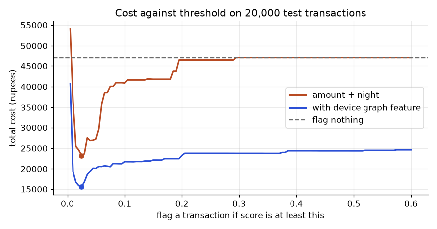

Two candidates with equal skill are not equal in an interview. The one who says "for credit risk we check KS, Gini and PSI, and the label arrives 12 months late" sounds like a colleague. The one who says "I would train XGBoost" sounds like a student. This chapter gives you the vocabulary, the special metrics and one runnable example for each major domain: customer churn and lifetime value, credit scorecards, fraud, marketing mix and pricing, demand and supply chain, healthcare, and operations analytics (queues, delivery times, capacity). By the end you will be able to build a small scorecard by hand, set a fraud threshold from costs, fit an adstock curve, and predict when a warehouse hits its capacity limit. Pick one or two domains to go deep. Skim the rest.
Code uses the shop dataset from Chapter 1 (from ds_common import *, seed 42) for churn, and small synthetic generators (fixed seeds) for the other domains. All outputs below were produced by running the code with numpy, pandas, scikit-learn and scipy. Where I name a library we did not run (BG/NBD, PyMC-Marketing, OR-Tools), I say "not run here".
Words you need.
| Word | Plain meaning | Example in the shop data |
|---|---|---|
| Contractual churn | Customer must cancel; you see it | A pro plan cancelled |
| Non-contractual churn | Customer just goes silent | No order for 90 days |
| Censored | Still active when data ends, so end time unknown | Customer still ordering on 30 Apr 2025 |
| Survival curve S(t) | Share still active after t days | S(180) = 0.47 |
| CLV | Customer lifetime value: total future profit from one customer | 12-month profit per customer |
| RFM | Recency, Frequency, Monetary: simple behaviour scores | Days since last order, order count |
Survival analysis answers "how long until churn?" instead of "will churn happen in 60 days?". Its key tool is the Kaplan-Meier estimator. At each day t where someone churned, multiply the running survival by (1 - d/n), where d is churners that day and n is customers still at risk. Censored customers leave the "at risk" count but never count as churners. This uses customers who are still active, which a plain "churned or not" table wastes.
Problem 11.1.1 Five customers have tenure (days) 2, 3, 3, 5, 8. Events: churned, churned, censored, churned, censored. Compute the Kaplan-Meier survival.
| Formula | S(t) = S(previous) × (1 − d/n) |
|---|---|
| Step 1 | Day 2: n = 5 at risk, d = 1 churn. S = 1 × (1 − 1/5) = 0.80. |
| Step 2 | Day 3: one churner and one censored. Everyone with tenure ≥ 3 is at risk: n = 4. d = 1. S = 0.80 × (1 − 1/4) = 0.60. |
| Step 3 | Day 5: at risk are tenure 5 and 8, so n = 2, d = 1. S = 0.60 × (1 − 1/2) = 0.30. |
| Step 4 | Day 8 is censored, no churn, S stays 0.30. |
| Answer | S = 0.80, 0.60, 0.30, 0.30 at days 2, 3, 5, 8. |
| Check | The code below prints the same four numbers. |
Problem 11.1.2 On the shop data define churn as "last order more than 90 days before 30 April 2025". Compute S(90), S(180), S(365) by plan.
from ds_common import *
customers, orders = make_data()
last = orders.groupby("customer_id").order_ts.max()
c = customers.set_index("customer_id").join(last.rename("last")).dropna(subset=["last"])
c["event"] = ((END_DATE - c["last"]).dt.days > 90).astype(int)
c["tenure"] = np.where(c.event == 1, (c["last"] - c.signup_date).dt.days,
(END_DATE - c.signup_date).dt.days)
def km(t, e, points):
surv, s = {}, 1.0
for u in np.sort(np.unique(t[e == 1])):
at = (t >= u).sum(); d = ((t == u) & (e == 1)).sum()
s *= 1 - d / at; surv[u] = s
surv = pd.Series(surv)
return {p: round(float(surv[surv.index <= p].iloc[-1]), 3) for p in points}
print(km(np.array([2,3,3,5,8]), np.array([1,1,0,1,0]), [2,3,5,8]))
for pl in ["free", "pro"]:
m = c[c.plan == pl]
print(pl, len(m), km(m.tenure.values, m.event.values, [90, 180, 365])){2: 0.8, 3: 0.6, 5: 0.3, 8: 0.3}
free 3808 {90: 0.662, 180: 0.467, 365: 0.262}
pro 1688 {90: 0.852, 180: 0.734, 365: 0.57}CLV, the practical way. The fancy models (BG/NBD for how often a customer buys while alive, Gamma-Gamma for how much they spend, not run here) are useful, but start with a cohort table: for customers who signed up long enough ago to be fully observed, add up revenue by month since signup and multiply by margin. Restrict to customers with a full window, otherwise recent customers drag the average down (a censoring error).
o = orders.merge(customers[["customer_id", "signup_date", "plan"]], on="customer_id")
o["month"] = (o.order_ts - o.signup_date).dt.days // 30
old = customers[customers.signup_date < "2024-04-01"] # 12 full months observed
for pl in ["free", "pro"]:
ids = old[old.plan == pl].customer_id
x = o[o.customer_id.isin(ids) & (o.month < 12)]
rev = x.groupby("month").amount.sum() / len(ids)
print(pl, len(ids), rev.round(0).astype(int).tolist(), round(rev.sum()), round(rev.sum() * 0.20))free 2676 [1085, 969, 866, 793, 670, 617, 549, 518, 417, 392, 386, 347] 7610 1522
pro 1109 [2495, 2388, 2301, 2305, 2111, 2123, 2004, 1906, 1873, 1772, 1718, 1707] 24702 4940The last two numbers on each line are 12-month revenue and 12-month profit (revenue × 0.20). Notice the monthly revenue per customer falls from 1,085 to 347 for free customers: that fall is churn at work.
RFM segmentation gives action groups without any model. We cut recency and frequency into thirds among active customers at T and check the churn label of Chapter 1.
d = make_label_table(customers, orders)
past = orders[orders.order_ts < PRED_DATE]
g = past.groupby("customer_id").agg(last=("order_ts", "max"), f=("order_id", "count"))
d = d.merge(g, left_on="customer_id", right_index=True)
d["rec"] = (PRED_DATE - d["last"]).dt.days
d["R"] = pd.qcut(d.rec, 3, labels=[3, 2, 1]).astype(int) # 3 = most recent
d["F"] = pd.qcut(d.f.rank(method="first"), 3, labels=[1, 2, 3]).astype(int)
d["seg"] = np.select([(d.R == 3) & (d.F == 3), (d.R == 1) & (d.F == 1)],
["champions", "slipping"], "middle")
print(d.groupby("seg").churn.agg(n="size", churn_rate="mean").round(3)) n churn_rate
seg
champions 447 0.027
middle 1719 0.235
slipping 396 0.593The "slipping" group churns 22 times more often than "champions" (0.593 / 0.027 = 22). That is a free, explainable model.
The picture. Survival curve: x axis is days since signup, y axis is the share still active, starting at 1.0 and stepping down at each churn day. The pro curve sits above the free curve. The gap at day 365 (0.57 vs 0.26) is the area where retention offers pay.
Churn is not the end: uplift. Predicting who will leave does not tell you who will respond to an offer. Some "likely churners" leave no matter what; some would have stayed anyway. Uplift modelling (Chapter 8) estimates the change in churn caused by the offer. Target by uplift times value, not by churn score alone.
Connection to the job. Telecom, SaaS, banks and e-commerce all run churn teams. Next-best-action systems combine churn score, CLV and offer cost (Chapter 12).
Applications
1 / churn rate or averaging tenure of churned customers only. Active customers are censored, and dropping them makes lifetimes look shorter than they are. Use survival curves.Check yourself
Words you need.
| Word | Meaning |
|---|---|
| PD | Probability of default: chance the borrower fails to pay in a fixed window |
| LGD | Loss given default: share of the loan not recovered |
| EAD | Exposure at default: amount owed when default happens |
| Expected loss | PD × LGD × EAD |
| WoE | Weight of evidence of a bin: ln(share of goods / share of bads) |
| IV | Information value: how well a variable separates good from bad; Σ (pg − pb) × WoE |
| KS | Largest gap between cumulative bad rate and cumulative good rate across the score |
| Gini | 2 × AUC − 1 |
| PSI | Population stability index: how much a distribution moved |
| Good/bad | Bad = defaulted; good = paid |
Problem 11.2.1 A bank has 1,000 good and 100 bad customers. In the bin "utilisation above 60%" there are 100 goods and 20 bads. Find WoE and the IV contribution.
| Formula | pg = goods in bin / all goods; pb = bads in bin / all bads; WoE = ln(pg / pb); IV part = (pg − pb) × WoE |
|---|---|
| Plug in | pg = 100 / 1,000 = 0.10; pb = 20 / 100 = 0.20 |
| Compute | WoE = ln(0.10 / 0.20) = ln(0.5) = −0.693. IV part = (0.10 − 0.20) × (−0.693) = 0.0693 |
| Answer | WoE is −0.693 (negative: this bin has more bads than its share of goods). It adds 0.069 to the IV. |
| Check | A bin with pg = pb has WoE = ln(1) = 0 and contributes nothing. Correct, since it separates nothing. |
| Why it matters | WoE puts every bin on one log-odds scale, so any variable (even a category) becomes a clean numeric input. |
Rule of thumb for total IV: below 0.02 useless, 0.02 to 0.1 weak, 0.1 to 0.3 medium, above 0.3 strong, above 0.5 suspicious (check leakage). These are conventions, not laws.
Build a scorecard. We simulate 20,000 applicants with utilisation, debt-to-income (dti), age and past delinquencies, and a 5.45% default rate. We bin on the first 14,000 (train), compute WoE and IV, fit logistic regression on WoE, and test on the last 6,000.
import numpy as np, pandas as pd
from sklearn.linear_model import LogisticRegression
from sklearn.metrics import roc_auc_score
rng = np.random.default_rng(7); n = 20000
util = np.clip(rng.beta(2, 3, n), 0, 1); dti = np.clip(rng.normal(0.35, 0.12, n), 0.02, 0.9)
age = np.clip(rng.normal(36, 9, n), 21, 65).round(); delinq = rng.poisson(0.4, n)
z = -3.2 + 2.2*(util-0.4) + 3.0*(dti-0.35) - 0.02*(age-36) + 0.45*delinq
y = (rng.random(n) < 1/(1+np.exp(-z))).astype(int)
df = pd.DataFrame(dict(util=util, dti=dti, age=age, delinq=delinq, y=y))
tr, te = df.iloc[:14000], df.iloc[14000:]
def woe_table(x, y, bins):
t = pd.DataFrame({"b": pd.cut(x, bins, include_lowest=True), "y": y}).groupby("b", observed=True).y.agg(["size", "sum"])
t.columns = ["n", "bad"]; t["good"] = t.n - t.bad
t["pg"] = t.good / t.good.sum(); t["pb"] = t.bad / t.bad.sum()
t["woe"] = np.log(t.pg / t.pb); t["iv"] = (t.pg - t.pb) * t.woe
return t
specs = {"util": [0, .2, .4, .6, 1.0], "dti": [0, .25, .35, .45, 1.0],
"age": [20, 30, 40, 50, 70], "delinq": [-1, 0, 1, 2, 20]}
tabs = {k: woe_table(tr[k], tr.y, b) for k, b in specs.items()}
print(tabs["util"].round(3))
print({k: round(float(t.iv.sum()), 3) for k, t in tabs.items()}) n bad good pg pb woe iv
b
(-0.001, 0.2] 2527 70 2457 0.186 0.087 0.765 0.076
(0.2, 0.4] 4800 223 4577 0.347 0.276 0.229 0.016
(0.4, 0.6] 4159 274 3885 0.294 0.339 -0.141 0.006
(0.6, 1.0] 2514 241 2273 0.172 0.298 -0.549 0.069
{'util': 0.168, 'dti': 0.115, 'age': 0.03, 'delinq': 0.117}Read the table: low utilisation (below 20%) has WoE +0.765, so these customers are safer. High utilisation has WoE −0.549. WoE falls steadily as utilisation rises, which is a monotonic pattern, exactly what regulators like to see. Utilisation (IV 0.168) and delinquency and dti (about 0.115) are medium; age (0.03) is weak.
Next, fit the logistic model on WoE values and measure ranking power.
def apply_woe(d):
X = pd.DataFrame(index=d.index)
for k, b in specs.items():
X[k] = pd.cut(d[k], b, include_lowest=True).map(tabs[k].woe.to_dict()).astype(float)
return X
Xtr, Xte = apply_woe(tr), apply_woe(te)
lr = LogisticRegression(C=1e6, max_iter=1000).fit(Xtr, tr.y)
print(dict(zip(Xtr.columns, lr.coef_[0].round(3))), lr.intercept_.round(3))
def ks(y, s):
d = pd.DataFrame({"y": y, "s": s}).sort_values("s", ascending=False)
return ((d.y.cumsum()/d.y.sum()) - ((1-d.y).cumsum()/(1-d.y).sum())).abs().max()
for nm, X, d in [("train", Xtr, tr), ("test", Xte, te)]:
pr = lr.predict_proba(X)[:, 1]; a = roc_auc_score(d.y, pr)
print(nm, "AUC", round(a, 4), "Gini", round(2*a-1, 4), "KS", round(ks(d.y.values, pr), 4)){'util': -1.022, 'dti': -1.01, 'age': -1.05, 'delinq': -1.045} [-2.793]
train AUC 0.6785 Gini 0.3571 KS 0.2591
test AUC 0.6853 Gini 0.3706 KS 0.2949All four coefficients are close to −1. That is a good sign: WoE is already "log-odds of good", and we model "bad", so the sign is negative and the size is near one when WoE is a faithful summary. Coefficients far from −1, or with a positive sign, signal correlated variables or bad bins.
Problem 11.2.2 Compute the Gini and read the result. Test AUC is 0.6853.
| Formula | Gini = 2 × AUC − 1 |
|---|---|
| Compute | 2 × 0.6853 − 1 = 0.3706 |
| Answer | Gini is 0.37 and KS is 0.29 on the test set. |
| Check | Train and test are close (0.357 vs 0.371), so the model is not overfitted. A coin flip has AUC 0.5 and Gini 0. |
| Why it matters | A very high Gini on loan data (say 0.9) would make a risk head suspect leakage before celebrating. (Our data is synthetic with only four weak inputs; do not compare it to a real bank, and real ranges depend on the product and the data.) |
Points per bin. A scorecard converts log-odds to points. Choose a base score (600 points at odds 50 good per bad) and "points to double the odds" (PDO = 20). Then factor = PDO / ln 2 = 28.854 and offset = 600 − factor × ln 50 = 487.123. Each bin's points are −(WoE × coefficient + intercept/4) × factor + offset/4, rounded.
util bin points
(-0.001, 0.2] 164
(0.2, 0.4] 149
(0.4, 0.6] 138
(0.6, 1.0] 126An applicant with utilisation 0.55, dti 0.30, age 45, one delinquency scores 566 (sum of four bin points, from the run). Any underwriter can recompute that by hand, which is the point.
PSI, the monitoring metric. PSI = Σ (actual% − expected%) × ln(actual% / expected%) over score bins. Conventions: below 0.1 stable, 0.1 to 0.25 watch, above 0.25 significant shift.
Problem 11.2.3 Expected shares in two bins are 50% and 50%. This month they are 40% and 60%. Find PSI.
| Plug in | (0.40 − 0.50) × ln(0.40/0.50) + (0.60 − 0.50) × ln(0.60/0.50) |
|---|---|
| Compute | (−0.10)(−0.2231) + (0.10)(0.1823) = 0.02231 + 0.01823 = 0.0405 |
| Answer | PSI = 0.04, stable. |
On the scorecard: PSI of test scores against train scores (same population) was 0.0006. We then simulated a recession: utilisation up by 0.15 and dti up by 0.05. PSI became 0.4559, far above 0.25. The score distribution moved, so we investigate before trusting decisions.
Other credit ideas. Expected loss = PD × LGD × EAD. For example PD 3%, LGD 45%, EAD 200,000 rupees gives 0.03 × 0.45 × 200000 = 2,700 rupees. Reject inference: you only see repayment for loans you approved, so training only on approved customers is a selection bias (Chapter 4, and Chapter 2 on selective labels). Methods such as parcelling and augmentation guess outcomes for rejects; they need strong assumptions and are not run here. Explainability and regulation: Indian lenders follow RBI guidance on model risk and fair practice codes; the exact circulars change, so read the current ones. In practice you need reason codes (the points that pulled a score down) for each rejected applicant.
Connection to the job. BFSI is the largest hiring domain for data scientists in India. Scorecards, collections models and early-warning systems all use these metrics.
Applications
Check yourself
What makes fraud special.
| Feature | Consequence |
|---|---|
| Extreme imbalance (about 0.4% fraud here) | Accuracy is meaningless; use precision, recall, PR-AUC |
| Fixed review capacity | Judge precision at K (best K cases) |
| Unequal costs | Choose the threshold from money, not 0.5 |
| Adversaries adapt | Concept drift; retrain, monitor, add rules |
| Real-time scoring | Latency budget (tens of milliseconds); simple features at serving time |
| Network structure | Shared devices or addresses link fraud rings (graph features, awareness) |
We simulate 200,000 transactions with 0.416% fraud (831 cases), train gradient boosting on the first 140,000, and test on the last 60,000 (253 frauds).
from sklearn.ensemble import HistGradientBoostingClassifier
from sklearn.metrics import roc_auc_score, average_precision_score
rng = np.random.default_rng(11); n = 200000
amt = rng.lognormal(6, 1, n); night = (rng.random(n) < 0.2).astype(int)
newdev = (rng.random(n) < 0.1).astype(int); vel = rng.poisson(1, n)
z = -12.8 + 0.8*np.log(amt) + 1.5*night + 2.5*newdev + 0.7*vel
y = (rng.random(n) < 1/(1+np.exp(-z))).astype(int)
X = np.c_[np.log(amt), night, newdev, vel]
m = HistGradientBoostingClassifier(random_state=0).fit(X[:140000], y[:140000])
p = m.predict_proba(X[140000:])[:, 1]; yt = y[140000:]
print("test frauds", yt.sum(), "AUC", round(roc_auc_score(yt, p), 3),
"AP", round(average_precision_score(yt, p), 3), "base AP", yt.mean().round(5))
print("accuracy of always-no", round(1 - yt.mean(), 5))
top = yt[np.argsort(-p)[:500]]
print("caught in top 500:", top.sum(), "precision@500", round(top.mean(), 3), "recall", round(top.sum()/yt.sum(), 3))fraud rate 0.00416 831
test frauds 253 AUC 0.865 AP 0.061 base AP 0.00422
accuracy of always-no 0.99578
review cap 500 caught 45 precision@cap 0.09 recall 0.178Read it: "always say no fraud" is 99.58% accurate and catches nothing. AUC 0.865 looks good, but the average precision (area under the precision-recall curve) is only 0.061, about 14 times the random baseline of 0.0042, yet still low. With 500 reviews we catch 45 of 253 frauds (recall 17.8%), precision 9%.
Problem 11.3.1 A missed fraud loses 5,000 rupees on average. Reviewing an alert costs 100 rupees. At what fraud probability is it worth reviewing?
| Formula | Compare two costs for one transaction with fraud probability p. If we ignore it we expect to lose p × c_miss. If we review it we pay c_review on the innocent ones, an expected (1 − p) × c_review. Setting them equal gives p* = c_review / (c_review + c_miss) (we assume a reviewed fraud is caught for sure). |
|---|---|
| Plug in | p* = 100 / (100 + 5,000) |
| Compute | 100 / 5,100 = 0.0196 |
| Answer | Review any transaction with a fraud probability above about 2%, not above 50%. |
| Check | At p = 0.0196, expected cost of ignoring is 0.0196 × 5,000 = 98; expected cost of reviewing is 0.9804 × 100 = 98. Equal, so that is the break-even. |
The same logic on the test set (cost of FP = 100, cost of FN = 5,000):
threshold flagged TP FP FN total cost
0.5 26 4 22 249 1,247,200
0.1 334 43 291 210 1,079,100
0.0196 1803 97 1706 156 950,600
0.005 7738 176 7562 77 1,141,200(These probabilities assume reasonable calibration. Boosted models can be miscalibrated; check calibration before using cost-based thresholds, see 11.5.)
Connection to the job. UPI and card fraud teams run rules plus models in under 100 ms. Features like "transactions from this device in the last 10 minutes" must be computed identically in training and serving (Chapter 13).
Applications
Check yourself
Words you need.
| Word | Meaning | Example |
|---|---|---|
| Attribution | Giving credit for a sale to touchpoints | Last-touch: all credit to the last click |
| Incrementality | Sales caused by the campaign, beyond what would happen anyway | Geo experiment: ads in some cities only |
| Adstock | Carry-over: adstock_t = spend_t + a × adstock_{t-1} | a = 0.5 halves the effect each period |
| Saturation | Diminishing returns: x / (x + k) | k = half-saturation point |
| Price elasticity | % change in demand for 1% change in price | −1.8 means a 1% price rise loses 1.8% of units |
Attribution rules (last-touch, multi-touch, data-driven) are fast but only correlational; they love channels that sit at the end of the journey (brand search). Incrementality tests (holdout groups, geo experiments, see Chapters 7 and 8) are the truth check. MMM uses aggregate weekly data, needs no user tracking, and fits well under privacy rules.
Problem 11.4.1 Spend is 100 in week 1 and 0 afterwards. With a = 0.5, find adstock for weeks 1 to 3. Then find the saturation x/(x+150) for x = 50, 150, 450.
| Formula | adstock_t = spend_t + 0.5 × adstock_{t−1}; saturation = x / (x + k) |
|---|---|
| Compute | Week 1: 100. Week 2: 0 + 0.5 × 100 = 50. Week 3: 0 + 0.5 × 50 = 25. Saturation: 50/200 = 0.25; 150/300 = 0.50; 450/600 = 0.75. |
| Answer | Adstock is 100, 50, 25. Saturation is 0.25, 0.50, 0.75: tripling x from 150 to 450 raises response only from 0.50 to 0.75. |
| Check | The code prints [100.0, 50.0, 25.0] and [0.25, 0.5, 0.75]. |
| Why it matters | Saturation is why you cannot just "double the budget"; the second rupee buys less than the first. |
Fit an MMM. We simulate 104 weeks with true adstock a = 0.6, half-saturation k = 150 and effect b = 200 on top of a base of 500 plus yearly seasonality, plus noise. Then we fit by least squares.
from scipy.optimize import least_squares
rng = np.random.default_rng(5); T = 104
spend = np.abs(rng.normal(100, 40, T)) * (1 + 0.5*(np.arange(T) % 13 == 0))
def adstock(x, a):
out = np.zeros_like(x); c = 0
for i, v in enumerate(x):
c = v + a*c; out[i] = c
return out
sat = lambda x, k: x / (x + k)
t = np.arange(T)
sales = 500 + 10*np.sin(2*np.pi*t/52) + 200*sat(adstock(spend, 0.6), 150) + rng.normal(0, 5, T)
def resid(p):
a, k, b, base, s1, s2 = p
return (base + s1*np.sin(2*np.pi*t/52) + s2*np.cos(2*np.pi*t/52)
+ b*sat(adstock(spend, a), k) - sales)
f = least_squares(resid, [0.3, 100, 100, 400, 0, 0],
bounds=([0, 10, 0, 0, -50, -50], [0.95, 1000, 1000, 1000, 50, 50]))
print("fit a,k,b,base:", f.x[:4].round(2))fit a,k,b,base: [ 0.58 326.19 198.68 541.63]Pricing. Fit ln(units) = c + e × ln(price); the slope e is the elasticity. We continue the same random generator and simulate 300 prices between 80 and 120 with true elasticity −1.8.
p = rng.uniform(80, 120, 300)
q = np.exp(8 - 1.8*np.log(p) + rng.normal(0, 0.1, 300))
e = np.polyfit(np.log(p), np.log(q), 1)[0]
print("elasticity", round(e, 3))elasticity -1.778Problem 11.4.2 Using e = −1.778, what happens to units and revenue if price rises 10%? What price maximises profit if unit cost is 60?
| Plug in | units factor = 1.1^(−1.778); revenue factor = 1.1^(1 − 1.778) |
|---|---|
| Compute | 1.1^(−1.778) = 0.844, so units fall 15.6%. Revenue factor = 1.1^(−0.778) = 0.9285, so revenue falls 7.15%. Profit-maximising price for constant elasticity: p* = c × e / (1 + e) = 60 × (−1.778) / (−0.778) = 137.1 |
| Answer | A 10% rise loses 15.6% of units and 7.15% of revenue. The formula says 137. |
| Check | If |e| > 1, raising price lowers revenue. That matches. But our data only has prices from 80 to 120. A price of 137 is extrapolation, outside what we have seen, so do not trust it; test 110 to 125 in a real experiment first. |
| Why it matters | Elasticity from observational data is biased when prices were set in response to demand (confounding, Chapter 4). Randomised price tests are safer. |
Other pricing words: dynamic pricing (change price by time and stock), promotions (they steal sales from the future; model the dip after), markdown optimisation (clearing stock before it expires).
Applications
Check yourself
Demand and inventory (builds on forecasting, Chapter 6). Two simple formulas carry most practical work.
L (days between ordering and delivery): SS = z × σ_daily × √L, where z is the normal quantile for your service level (1.645 for 95%).CR = c_under / (c_under + c_over), where c_under is the profit lost per unit short and c_over the loss per unit left over.Problem 11.5.1 Daily demand has mean 100 and standard deviation 30. Lead time is 4 days. Target service 95%. Find safety stock and reorder point.
| Formula | SS = z × σ × √L; ROP = mean × L + SS |
|---|---|
| Plug in | z = 1.645; √4 = 2 |
| Compute | SS = 1.645 × 30 × 2 = 98.7. ROP = 100 × 4 + 98.7 = 498.7 |
| Answer | Keep about 99 units of safety stock and reorder when stock falls to about 499. |
| Check | The code printed z95 1.645 safety stock 98.7 ROP 498.7. |
| Why it matters | Doubling lead time raises safety stock by only √2, not 2, because random errors partly cancel. |
Problem 11.5.2 Festival item. Each unit short loses 40 rupees profit; each unit left over costs 10. Demand is Normal(mean 500, sd 100). How much to stock?
| Compute | CR = 40 / (40 + 10) = 0.80. Normal quantile at 0.80 is +0.8416. Q* = 500 + 0.8416 × 100 = 584.2 |
|---|---|
| Answer | Stock about 584 units, well above the mean, because shortages cost four times more than leftovers. |
| Check | Code printed critical ratio 0.8 Q* 584.2. |
Other supply-chain tools (OR-Tools for routing and scheduling is covered in Chapter 12; not run here): ETA prediction for logistics is a regression with heavy tails (report quantiles, not just the mean), and intermittent demand uses Croston-type methods.
Healthcare. Health data has rare outcomes, strict privacy (identifiers, consent, India's DPDP Act), long label delays and high costs for errors. Two ideas matter most. Calibration: when the model says 20% risk, about 20 of 100 such patients should have the event. Clinical utility (net benefit): at a threshold probability p_t, net benefit = TP/N − FP/N × p_t/(1 − p_t). It compares a model with "treat everyone" and "treat nobody" (net benefit 0). Survival analysis (11.1) is also standard.
We simulated 20,000 patients (8.9% event rate overall, 8.76% in the test part), trained on 12,000, and compared logistic regression with a random forest on the other 8,000 by quintiles of predicted risk.
rf pred obs n
(-0.001, 0.005] 0.002 0.019 1862
(0.005, 0.025] 0.016 0.038 1642
(0.025, 0.06] 0.043 0.052 1353
(0.06, 0.15] 0.101 0.111 1583
(0.15, 0.915] 0.313 0.229 1560
lr pred obs n
(-0.00084, 0.016] 0.009 0.008 1600
(0.016, 0.0352] 0.025 0.022 1600
(0.0352, 0.0683] 0.050 0.056 1600
(0.0683, 0.141] 0.098 0.094 1600
(0.141, 0.923] 0.271 0.258 1600p_t model NB treat-all NB treat-none
0.05 0.0547 0.0396 0
0.10 0.0354 -0.0138 0
0.20 0.0201 -0.1405 0
0.30 0.0113 -0.3034 0Problem 11.5.3 Compute the net benefit of "treat all" at threshold 0.10. The test-set event rate is 0.0876.
| Plug in | prevalence − (1 − prevalence) × 0.10/0.90 |
|---|---|
| Compute | 0.0876 − 0.9124 × 0.1111 = 0.0876 − 0.1014 = −0.0138, which matches the table |
| Answer | Treating everybody at a 10% threshold does harm (negative net benefit), while the model has +0.035. |
| Check | At threshold 0.05, treat-all (0.0396) is positive but the model (0.0547) is still better. |
| Why it matters | A doctor who treats at a 10% risk accepts nine false alarms per true case. Net benefit uses exactly that trade-off. |
Other domains at a glance.
| Domain | Typical problems | Special care |
|---|---|---|
| Telecom | Churn, ARPU, network anomalies, usage forecasts | Huge data, billing definitions |
| Retail / e-commerce | Assortment, search, recommendations, returns | Seasonality, cold-start |
| SaaS | MRR/ARR, activation, retention funnels | Cohorts, product events |
| Manufacturing | Predictive maintenance, quality, time-to-failure | Few failures, sensor drift |
| Logistics | ETA, routing, hub capacity | Heavy-tailed delays |
| Geospatial | Distance features, delivery zones, spatial joins | Use geopandas, shapely, h3 (not run here) |
| NLP and vision in business | Ticket routing, document extraction, review mining | Details in the deep learning and GenAI material |
Learning a domain fast. Read one annual report and one earnings call, write a glossary of 50 terms, ask an expert for 30 minutes, join a business meeting, and build one small domain project. India-specific strengths worth knowing: UPI-scale payments, quick commerce, ONDC (open commerce networks), agritech, Indian-language NLP, global capability centres (GCC), and DPDP and data localisation rules.
Check yourself
Two laws that explain most waiting problems.
L = λ × W. The average number of items in a system (L) equals the arrival rate (λ) times the average time each item spends in the system (W). Patients in a clinic, orders in a warehouse and customers in a bank all obey it.R = S / (1 − ρ), where R is the average time in the system, S is the average service time and ρ (rho) is utilisation, the share of time the server is busy.Problem 11.6.1 A clinic admits 50 patients per hour and each stays 0.4 hours on average. How many patients are in the clinic? Then a bank counter serves a customer in S = 0.1 hour (6 minutes) on average. What is the average time in the bank at utilisation 50% to 95%?
| Formula | L = λ × W; R = S / (1 − ρ) |
|---|---|
| Compute | L = 50 × 0.4 = 20 patients. R: ρ = 0.5 gives 0.1/0.5 = 0.200 h; 0.7 gives 0.333 h; 0.8 gives 0.500 h; 0.9 gives 1.000 h; 0.95 gives 2.000 h |
| Answer | About 20 patients are in the clinic at any time. Going from 50% to 95% utilisation makes the time in the bank 10 times longer (0.2 h to 2.0 h, that is 12 minutes to 2 hours). |
| Check | At ρ = 0 the formula gives R = S = 0.1 h, a customer who never waits. Correct. |
| Why it matters | "The counter is busy only 70% of the time, so it is fine" is not a safe sentence. The last 20% of utilisation costs more waiting than the first 70%. |
Anomaly detection on delivery times. A warehouse records the average order-to-dispatch time (in seconds) every minute. Orders arrive in a daily cycle, so the busy hour is slower, and that is normal. A global rule (flag if more than 3 standard deviations from the overall mean) mixes up "busy" and "broken". Compare each minute with its own recent past instead: use a rolling median and a rolling MAD (median absolute deviation, a robust spread), and a robust z-score 0.6745 × (x − median) / MAD.
We simulate 7 days of per-minute readings with a daily order cycle, plus one incident (minutes 5000 to 5029, +150 seconds).
rng = np.random.default_rng(3); T = 7*24*60; t = np.arange(T)
orders_per_hr = 100 + 40*np.sin(2*np.pi*t/1440 - 1.5) + 0.001*t + rng.normal(0, 5, T)
dispatch = 80 + 0.8*np.maximum(orders_per_hr - 100, 0)**1.2 + rng.normal(0, 6, T)
dispatch[5000:5030] += 150
s = pd.Series(dispatch)
med = s.rolling(60, min_periods=30).median()
mad = (s - med).abs().rolling(60, min_periods=30).median()
flag = (0.6745*(s - med)/mad) > 6
idx = np.where(flag)[0]
print("flagged", len(idx), "first", idx.min(), "last", idx.max(),
"inside incident", int(((idx >= 5000) & (idx < 5030)).sum()))
print("global z>3 count", int(((s - s.mean())/s.std() > 3).sum()))flagged minutes 24 first 5000 last 5023
flagged inside 5000-5029: 24
global z>3 count 30incident 7169 7198 rolling flagged 5 inside 5 | global flagged 1 inside 0At the quiet hour the global threshold (set by busy-hour variation) never fires inside the incident, and its single flag is a false alarm. The rolling rule catches 5 of 30 minutes, which is still a late and partial warning. A rolling window adapts, which is both strength (it follows the daily cycle) and weakness (a long incident becomes "normal"). Pair it with a fixed service rule such as "average dispatch time above 300 seconds for 5 minutes in a row".
Capacity forecast. The warehouse's daily peak load rose from about 200 orders with a slope of 0.8 per day plus noise. The packing limit is 300 orders. Fit a line, find when it crosses, and bootstrap the date.
days = 90
peak = 200 + 0.8*np.arange(days) + rng.normal(0, 6, days)
b = np.polyfit(np.arange(days), peak, 1)
d = (300 - b[1]) / b[0]
print("slope", b.round(3), "day hits limit", round(d, 1), "from day 90 =", round(d - 90, 1))slope [ 0.814 200.115]
day hits limit 122.7 from day 90 = 32.7
90% interval [119.3 126.3](The 90% interval came from 1,000 bootstrap refits of the line on resampled days.)
Your portfolio piece. Take any public operations dataset (taxi trips, hospital appointments, delivery logs, bike-share) and produce: percentiles of waiting time by hour (p50, p90, p99), a Little's law consistency check, the utilisation level where waiting explodes, anomaly flags checked against known events, and a capacity date with an interval.
Applications
Check yourself
Kaplan-Meier (Section 11.1) gives one curve per group. It cannot say "how much does being on the pro plan change the risk, holding region and age fixed?". For that you need a model of the hazard: the chance that a customer who is still active at the start of month t churns during month t. Two practical routes are the discrete-time model (a logistic regression on a stacked table) and the Cox model (a regression on the hazard ratio that never specifies the baseline shape).
Turn each customer into one row per month they were observed. The row says: this customer, this month, did they churn? A customer who churned in month 3 gives rows for months 1, 2 (outcome 0) and month 3 (outcome 1). A customer censored after month 2 gives months 1 and 2 (both 0) and nothing else. Then fit an ordinary logistic regression with month and the covariates as features.
Problem 11.7.1 Four customers: A churned in month 3, B was censored after month 2, C churned in month 1, D was censored after month 4. Build the person-period table and count rows and events.
| Idea | One row per customer per month observed. Outcome is 1 only on the churn month. |
|---|---|
| A | (A,1,0), (A,2,0), (A,3,1): 3 rows, 1 event. |
| B | (B,1,0), (B,2,0): 2 rows, 0 events (censored customers never get a 1). |
| C | (C,1,1): 1 row, 1 event. |
| D | (D,1,0), (D,2,0), (D,3,0), (D,4,0): 4 rows, 0 events. |
| Answer | 10 rows, 2 events. The logistic model sees 2 positives out of 10 rows, but the right reading is a monthly hazard: month 1 has 4 at risk and 1 event (hazard 0.25), month 2 has 3 at risk and 0 events, month 3 has 2 at risk and 1 event (0.5), month 4 has 1 at risk and 0 events. |
Problem 11.7.2 Simulate 4,000 customers, half on the pro plan. The true monthly hazard on the logit scale is -2.2 for free and -2.2 - 0.8 for pro, constant over time, observed for at most 12 months. Fit the model and check that it recovers the plan effect and the 12-month survival.
import numpy as np, pandas as pd
from sklearn.linear_model import LogisticRegression
rng = np.random.default_rng(7)
n = 4000
pro = rng.integers(0, 2, n)
h = 1 / (1 + np.exp(-(-2.2 - 0.8 * pro))) # true monthly hazard
T = rng.geometric(h) # month of churn
event = (T <= 12).astype(int) # churn seen inside the window
tenure = np.minimum(T, 12) # censored at 12
rows = []
for i in range(n):
for m in range(1, tenure[i] + 1):
rows.append((m, pro[i], int(event[i] == 1 and m == tenure[i])))
pp = pd.DataFrame(rows, columns=["month", "pro", "churn"])
print("rows", len(pp), "events", pp.churn.sum())
lr = LogisticRegression(C=1e6).fit(pp[["month", "pro"]], pp.churn)
print("month coef", lr.coef_[0][0].round(3), "pro coef", lr.coef_[0][1].round(3),
"odds ratio", np.exp(lr.coef_[0][1]).round(3))
for p in (0, 1):
hz = lr.predict_proba(pd.DataFrame({"month": range(1, 13), "pro": p}))[:, 1]
print("plan", p, "model S(12)", np.prod(1 - hz).round(3),
"empirical share still active", (T[pro == p] > 12).mean().round(3))
rows 32786 events 2361
month coef 0.005 pro coef -0.764 odds ratio 0.466
plan 0 model S(12) 0.278 empirical share still active 0.278
plan 1 model S(12) 0.541 empirical share still active 0.541How to read it. The pro coefficient is close to the true value of -0.8, so the odds of churning in any given month for pro customers are about 0.47 times those of free customers. The month coefficient is near zero because we built a constant hazard. On real data it is usually not zero (hazards fall or rise with tenure), and that is the point of including month. The model survival at 12 months matches the share who really were still active.
The Cox proportional hazards model writes the hazard for a customer with covariates x as h(t | x) = h0(t) · exp(β·x). The baseline h0(t) can be any shape and is never estimated; only β is. exp(β) is the hazard ratio: 0.5 means half the churn risk at every moment. The fit maximises the partial likelihood: at each churn time, the probability that it was this customer who churned, among everyone still at risk.
Problem 11.7.3 Three customers. A (free, x = 1) churns on day 2. B (pro, x = 0) churns on day 5. C (free, x = 1) is censored on day 7. Find the hazard ratio of free versus pro by hand.
| Setup | Let u = exp(β), the hazard ratio of free (x = 1) against pro (x = 0). Risk weights: free = u, pro = 1. |
|---|---|
| Day 2 | Everyone is at risk: weights u + 1 + u = 2u + 1. Chance it was A: u / (2u + 1). |
| Day 5 | At risk are B and C: weights 1 + u. Chance it was B: 1 / (1 + u). |
| Log-likelihood | l = ln u - ln(2u + 1) - ln(1 + u). Differentiate with respect to u and set to zero: 1/u - 2/(2u+1) - 1/(1+u) = 0. |
| Solve | 1/u - 2/(2u+1) = 1/(u(2u+1)), so 1/(u(2u+1)) = 1/(1+u). That gives 1 + u = 2u² + u, so u² = 1/2 and u = 0.7071. |
| Meaning | Hazard ratio 0.707 for free against pro, so β = ln 0.7071 = -0.3466. With three customers this is noise, not evidence; it only shows the mechanics. |
import numpy as np
from scipy.optimize import minimize_scalar
def neg_log_lik(b):
return -(b - np.log(2 * np.exp(b) + 1) - np.log(1 + np.exp(b)))
r = minimize_scalar(neg_log_lik, bounds=(-3, 3), method="bounded")
print("beta", round(r.x, 4), "hazard ratio", round(float(np.exp(r.x)), 4))
beta -0.3466 hazard ratio 0.7071The proportional hazards assumption says the ratio is the same at every tenure. Check it: fit the model separately on early months (1 to 3) and later months (4 to 12). If the plan coefficient changes sign or halves, add an interaction pro × month or stratify. Another expert point is the competing risk: a customer who moves country can never churn for price reasons, so treating those as ordinary censoring overstates how long the rest would last. Fine and Gray models or cause-specific hazards handle this; the stats document covers the formal theory.
Section 11.1 said BG/NBD was "not run here". We now build it, because it is the clearest example of a probabilistic customer model: a few interpretable assumptions, a likelihood you can code in 20 lines, and a forecast of future purchases for each customer. It suits a non-contractual retailer where you never see the customer leave.
i arrive at random with rate λ per week (a Poisson process).p, and never returns.λ varies across customers as a Gamma distribution with shape r and rate α.p varies across customers as a Beta distribution with parameters a and b.x repeat purchases, t_x the week of the last one, and T the weeks observed (the "recency, frequency, T" summary).Problem 11.8.1 By hand: customer 1 has x = 0 (bought once, then nothing for T weeks). Customer 2 has x = 5, t_x = 40, T = 52. Which one does the model call "alive for sure"?
| Idea | Dropout can only happen right after a purchase. With x = 0 repeat purchases, there has been no repeat event after which a dropout could have been noticed. |
|---|---|
| Customer 1 | P(alive) = 1 in BG/NBD. (This is a known quirk: customers with no repeat purchases are treated as alive, but with a low expected rate because λ is shrunk towards the population.) |
| Customer 2 | P(alive) is below 1 because 12 silent weeks (52 - 40) is long for someone buying about every 8 weeks (40 / 5). The formula in the code below gives the exact number. |
import numpy as np
from scipy.special import gammaln, hyp2f1
from scipy.optimize import minimize
rng = np.random.default_rng(11)
N, T, H = 3000, 52.0, 26.0 # customers, weeks observed, weeks held out
r0, al0, a0, b0 = 0.8, 8.0, 1.2, 3.0 # true population parameters
lam = rng.gamma(r0, 1 / al0, N)
p = rng.beta(a0, b0, N)
x = np.zeros(N); tx = np.zeros(N); fut = np.zeros(N)
for i in range(N):
t, times = 0.0, []
while True:
t += rng.exponential(1 / lam[i])
if t > T + H: break
times.append(t)
if rng.random() < p[i]: break # dropped out after this purchase
cal = [u for u in times if u <= T]
x[i] = len(cal); tx[i] = cal[-1] if cal else 0.0
fut[i] = len(times) - len(cal) # purchases in the held-out weeks
def nll(th):
r, al, a, b = np.exp(th)
A = gammaln(r + x) - gammaln(r) + r * np.log(al)
B = gammaln(a + b) + gammaln(b + x) - gammaln(b) - gammaln(a + b + x)
t1 = -(r + x) * np.log(al + T)
t2 = np.where(x > 0, np.log(a) - np.log(np.maximum(b + x - 1, 1e-9)) - (r + x) * np.log(al + tx), -np.inf)
return -np.sum(A + B + np.logaddexp(t1, t2))
res = minimize(nll, np.log([1, 1, 1, 1]), method="Nelder-Mead",
options={"maxiter": 4000, "xatol": 1e-6, "fatol": 1e-8})
r, al, a, b = np.exp(res.x)
print("fitted r, alpha, a, b:", np.round([r, al, a, b], 3), " true:", [r0, al0, a0, b0])
def p_alive(x, tx, T):
d = 1.0 if x > 0 else 0.0
return 1 / (1 + d * a / (b + max(x, 1) - 1) * ((al + T) / (al + tx)) ** (r + x))
def expected(x, tx, T, t):
d = 1.0 if x > 0 else 0.0
core = (a + b + x - 1) / (a - 1) * (1 - ((al + T) / (al + T + t)) ** (r + x)
* hyp2f1(r + x, b + x, a + b + x - 1, t / (al + T + t)))
return core * p_alive(x, tx, T)
print("customer 2 P(alive):", round(p_alive(5, 40, 52), 3), " expected next 26 weeks:", round(expected(5, 40, 52, 26), 3))
ex = np.array([expected(x[i], tx[i], T, H) for i in range(N)])
print("held-out purchases per customer: model", ex.mean().round(3), " actual", fut.mean().round(3))
for lo, hi in [(0, 0), (1, 1), (2, 3), (4, 99)]:
m = (x >= lo) & (x <= hi)
print("x in", (lo, hi), "n", int(m.sum()), "model", ex[m].mean().round(3), "actual", fut[m].mean().round(3))
fitted r, alpha, a, b: [0.835 8.333 0.971 2.355] true: [0.8, 8.0, 1.2, 3.0]
customer 2 P(alive): 0.642 expected next 26 weeks: 1.389
held-out purchases per customer: model 0.613 actual 0.576
x in (0, 0) n 578 model 0.325 actual 0.324
x in (1, 1) n 996 model 0.205 actual 0.19
x in (2, 3) n 782 model 0.443 actual 0.4
x in (4, 99) n 644 model 1.709 actual 1.613How to read it. The fit recovers the population parameters only roughly (0.97 against a true 1.2 for a; the customer-level parameters are never seen, so some drift is normal). The key check is the last table: for each frequency group the model's average forecast for the 26 held-out weeks lands within about 10% of what really happened in every frequency group (for example 1.71 against 1.61 for the most frequent buyers), and the overall average is 0.61 against 0.58. A model is never exact; you are checking for large, systematic gaps. Always run this holdout calibration check before you trust a CLV number.
Adding money: Gamma-Gamma. Average spend per order varies across customers too, and a customer with only 2 orders has a noisy average. Gamma-Gamma shrinks the observed average m̄ towards the population mean. With x orders, the expected spend is a weighted average: E[spend] = w · m̄ + (1 − w) · μ where w = p·x / (p·x + q − 1) and the population mean is μ = γ·p / (q − 1) (p, q, γ are the model's three fitted parameters).
Problem 11.8.2 Fitted p = 6, q = 4, γ = 15. A customer has 3 orders averaging 50 rupees. What spend does the model expect for the next order, and what would it be with 30 orders at the same average?
p_, q_, g_ = 6.0, 4.0, 15.0
mu = g_ * p_ / (q_ - 1)
for x_, mbar in [(3, 50.0), (30, 50.0)]:
w = p_ * x_ / (p_ * x_ + q_ - 1)
print("orders", x_, "weight on own average", round(w, 3), "expected spend", round(w * mbar + (1 - w) * mu, 2))
print("population mean", mu)
orders 3 weight on own average 0.857 expected spend 47.14
orders 30 weight on own average 0.984 expected spend 49.67
population mean 30.0By hand for 3 orders: w = 18 / (18 + 3) = 0.857, so the expectation is 0.857 × 50 + 0.143 × 30 = 47.14. With 30 orders, the weight rises to 0.984 and the answer to 49.67. More evidence, less shrinkage.
Then CLV over 26 weeks = expected purchases × expected spend per order × margin, optionally discounted. Multiply the two models only if spend and frequency are roughly uncorrelated (check this: corr(x, m̄) on repeat buyers).
BG/NBD assumes the dropout is a constant per-purchase probability, purchase rate is constant while alive, and customers are independent. Trends (promotions, seasons) break the second assumption; modern variants add covariates (PyMC-Marketing, not run here) or use a gradient-boosted model on RFM features to predict next-quarter spend directly. In practice many teams run both: BG/NBD as a transparent baseline and a GBM when there are rich features. The baseline is hard to beat for customers with very few orders.
Section 11.3 showed precision, recall and thresholds on a fraud problem. This section adds the two ideas that separate a junior from a senior fraud analyst: choose the threshold from money, not from F1, and use relationships between accounts as features.
Let a missed fraud (false negative) cost the transaction amount, and let each flagged transaction (true or false positive) cost a 5 rupee manual review. Total cost at a threshold is 5 × flagged + sum of amounts of frauds not flagged. Plot or tabulate it across thresholds and take the minimum. Two baselines belong on every cost table: "flag nothing" (pay every fraud) and "flag everything" (pay for every review).
Fraud rings reuse devices, cards or addresses. A simple graph feature is the number of accounts seen on the same device. Honest families sometimes share a device too, so the feature is strong but not perfect. The synthetic data below has 60,000 transactions with 1% fraud; 60% of fraud rows come from a ring that shares 60 devices.
Problem 11.9.1 Train a gradient-boosted model with and without acc_on_device. Compare average precision (area under the precision-recall curve, the right summary for rare events), then find the cost-minimising threshold.
import numpy as np, pandas as pd
from sklearn.ensemble import HistGradientBoostingClassifier
from sklearn.metrics import average_precision_score, roc_auc_score
rng = np.random.default_rng(5)
n = 60000
fraud = (rng.random(n) < 0.01).astype(int)
amount = np.where(fraud == 1, rng.lognormal(5.0, 0.8, n), rng.lognormal(4.2, 0.8, n)).round(2)
night = np.where(fraud == 1, rng.random(n) < 0.45, rng.random(n) < 0.2).astype(int)
ring = (fraud == 1) & (rng.random(n) < 0.6)
device = np.where(ring, rng.integers(0, 60, n), 1000 + np.arange(n))
family = rng.random(n) < 0.15
device = np.where((fraud == 0) & family, 1000 + rng.integers(0, 20000, n), device)
df = pd.DataFrame(dict(amount=amount, night=night, device=device, fraud=fraud))
df["acc_on_device"] = df.groupby("device").device.transform("size")
train = np.arange(n) < 40000
test = ~train
scores = {}
for name, cols in [("amount+night", ["amount", "night"]), ("with graph", ["amount", "night", "acc_on_device"])]:
m = HistGradientBoostingClassifier(random_state=0).fit(df.loc[train, cols], df.fraud[train])
s = m.predict_proba(df.loc[test, cols])[:, 1]
scores[name] = s
print(name, "AUC", round(roc_auc_score(df.fraud[test], s), 3), "AP", round(average_precision_score(df.fraud[test], s), 3))
y = df.fraud[test].values; amt = df.amount[test].values; review = 5.0
print("flag nothing:", round(amt[y == 1].sum()), " flag everything:", round(review * len(y)))
best = None
for th in [0.01, 0.02, 0.03, 0.05, 0.1, 0.2, 0.3, 0.5]:
f = scores["with graph"] >= th
cost = review * f.sum() + amt[(~f) & (y == 1)].sum()
print("threshold", th, "flagged", int(f.sum()), "caught", int((f & (y == 1)).sum()), "of", int(y.sum()), "cost", round(cost))
amount+night AUC 0.771 AP 0.053
with graph AUC 0.867 AP 0.542
flag nothing: 47034 flag everything: 100000
threshold 0.01 flagged 2756 caught 158 of 212 cost 19268
threshold 0.02 flagged 1443 caught 143 of 212 cost 15864
threshold 0.03 flagged 956 caught 131 of 212 cost 16762
threshold 0.05 flagged 331 caught 114 of 212 cost 20109
threshold 0.1 flagged 144 caught 107 of 212 cost 21749
threshold 0.2 flagged 124 caught 102 of 212 cost 23265
threshold 0.3 flagged 119 caught 100 of 212 cost 23772
threshold 0.5 flagged 109 caught 97 of 212 cost 24374
How to read the figure. Lower is better. Both curves start high on the left (flagging nearly everything costs reviews), fall to a minimum at a low threshold near 0.02, then rise to the dashed "flag nothing" line as the threshold climbs. The blue curve sits well below the orange one at every threshold, and its minimum is the lowest point on the chart. A threshold of 0.5 is nowhere near optimal for either model.
How to read it. Average precision jumps when the graph feature is added, while AUC rises less, a typical sign that AUC hides rare-event quality. In the cost table the best threshold is 0.02 (cost 15,864, against 47,034 for flagging nothing and 24,374 at 0.5), which is far from 0.5 because a missed fraud costs much more than a review. Note the leak risk: acc_on_device must be computed only from transactions before the one being scored. Here we counted over the whole table to keep the example short, which flatters the result; in production compute it point-in-time (Chapter 2).
A credit model is trained on applicants you approved, because only they have a repayment outcome. But it will score everyone who applies. The rejected group is missing from training: this is selection bias, and fixing it is called reject inference.
Problem 11.10.1 Simulate 60,000 applicants, default driven by income, utilisation and a hidden officer impression. Compare two approval policies: A uses only recorded variables, B also uses the hidden impression. Fit on approved applicants only, and compare to a model fitted on everyone (which you can never do in real life).
import numpy as np
from sklearn.linear_model import LogisticRegression
from sklearn.metrics import roc_auc_score
rng = np.random.default_rng(3)
n = 60000
inc = rng.normal(0, 1, n); util = rng.normal(0, 1, n); hid = rng.normal(0, 1, n)
z = -2.0 - 0.9 * inc + 0.6 * util + 1.0 * hid
d = (rng.random(n) < 1 / (1 + np.exp(-z))).astype(int)
X = np.c_[inc, util]
tr = np.arange(n) < 40000; te = ~tr
def study(label, score):
appr = score > 0
mA = LogisticRegression(C=1e6).fit(X[tr & appr], d[tr & appr])
mAll = LogisticRegression(C=1e6).fit(X[tr], d[tr])
print(label, "approved", appr.mean().round(2), "bad rate approved", d[appr].mean().round(3), "rejected", d[~appr].mean().round(3))
for nm, m in (("approved only", mA), ("all applicants", mAll)):
print(" ", nm, "coefs", m.coef_[0].round(2), "AUC", round(roc_auc_score(d[te], m.predict_proba(X[te])[:, 1]), 3),
"mean predicted PD", m.predict_proba(X[te])[:, 1].mean().round(3), "actual", d[te].mean().round(3))
study("Policy A (recorded only):", 0.8 * inc - 0.5 * util + rng.normal(0, 0.3, n))
study("Policy B (uses hidden view):", 0.5 * inc - 0.5 * util - 1.5 * hid + rng.normal(0, 0.3, n))
Policy A (recorded only): approved 0.5 bad rate approved 0.091 rejected 0.281
approved only coefs [-0.8 0.58] AUC 0.738 mean predicted PD 0.192 actual 0.187
all applicants coefs [-0.79 0.52] AUC 0.738 mean predicted PD 0.185 actual 0.187
Policy B (uses hidden view): approved 0.5 bad rate approved 0.062 rejected 0.308
approved only coefs [-0.69 0.34] AUC 0.736 mean predicted PD 0.077 actual 0.187
all applicants coefs [-0.79 0.52] AUC 0.738 mean predicted PD 0.185 actual 0.187How to read it. Under Policy A the approved-only coefficients match the all-applicants ones: when selection depends only on variables you recorded and model, there is no bias to fix. Under Policy B the utilisation coefficient shrinks (0.34 against 0.52) and the predicted default rate for the full applicant pool is far too low (mean predicted PD 0.077 against an actual 0.187). Ranking power (AUC) hardly moves, which is why this bias hides: the scorecard still ranks well but under-prices risk. Practical remedies: (1) keep a small random-approve test cell so you observe outcomes for some who would be rejected; (2) use the bounded-exposure data of past policies; (3) apply parcelling or fuzzy augmentation (label rejects with the model's own probabilities, weighted); this helps only when selection is on recorded variables, so it is a mitigation, not a cure.
c_review / (c_review + c_miss) = 2%, which saved 24.9%.z × σ × √L and newsvendor critical ratio turn forecasts into stock.| Item | Formula | Example |
|---|---|---|
| Kaplan-Meier | S × (1 − d/n) | 0.8 → 0.6 → 0.3 |
| WoE | ln(pg / pb) | ln(0.5) = −0.693 |
| IV | Σ (pg − pb) × WoE | 0.168 for utilisation |
| Gini | 2 × AUC − 1 | 0.3706 |
| PSI | Σ (a − e) × ln(a / e) | 0.0405 |
| Expected loss | PD × LGD × EAD | 0.03 × 0.45 × 200,000 = 2,700 |
| Cost threshold | c_fp / (c_fp + c_fn) | 100 / 5,100 = 0.0196 |
| Adstock, saturation | a × prev + x, x / (x + k) | 100, 50, 25 |
| Safety stock | z × σ × √L | 98.7 |
| Newsvendor | c_u / (c_u + c_o) | 0.80 → Q = 584 |
| Little's law, M/M/1 | L = λW, R = S/(1−ρ) | 20 patients, 2.0 h at 95% |
1. (Easy) Bin A has 40% of goods and 10% of bads. Find its WoE. Answer: ln(0.40/0.10) = ln 4 = 1.386. Very safe bin.
2. (Easy) PD 2%, LGD 50%, EAD 100,000 rupees. Expected loss? Answer: 0.02 × 0.5 × 100,000 = 1,000 rupees.
3. (Easy) A shop serves 120 customers per hour and each spends 0.25 hours inside. How many are inside on average? Answer: 120 × 0.25 = 30.
4. (Medium) PSI for three bins, expected (0.5, 0.3, 0.2), actual (0.4, 0.3, 0.3). Is it stable? Answer: (−0.1)ln(0.8) + 0 + (0.1)ln(1.5) = 0.0223 + 0.0405 = 0.0629. Below 0.1, stable.
5. (Medium) Find the bug: "Churn rate = 65% so average customer lifetime is 1/0.65 = 1.5 periods." The 65% came from all customers including still-active ones, treated as non-churned. Answer: Mixing a share of customers (who churned by a date) with a per-period hazard. The 65% depends on observation length, and active customers are censored. Use a survival curve or a per-period hazard.
6. (Medium) What is printed? adstock(np.array([200, 0, 0.]), 0.5) Answer: [200., 100., 50.], since each week keeps half of the previous adstock.
7. (Medium) Missed fraud costs 3,000, review costs 60. Capacity allows 200 reviews. Threshold from cost is about 2%, but 2% flags 900 cases a day. What do you do? Answer: Capacity is a constraint: review the top 200 by score (precision at K), then argue for more reviewers or a cheap automated step if the expected savings of the next 700 reviews exceed their cost.
8. (Hard) Elasticity −2.5, unit cost 40. Optimal price and warning? Answer: p* = 40 × (−2.5) / (−1.5) = 66.7. Warn that this assumes constant elasticity and must be tested inside the observed price range.
9. (Interview) "Your credit model has Gini 0.85 on test. Is that great?" Answer: Suspicious. Check for leakage (variables created after the decision, such as collection status), a time-ordered split, IV above 0.5 for any variable, and that the label window is respected. Real application scorecards are usually far below such a number.
10. (Interview) "How would you detect a slow capacity problem versus a sudden breakdown in delivery-time data?" Answer: Sudden: rolling robust z-score plus a fixed service rule. Slow: weekly peaks regressed on time (trend with interval), plus a look at where waiting time explodes as utilisation rises. Report the date range at which a limit is hit.
11. (Hard) A random forest has AUC 0.87 and its 5% to 10% predicted-risk bin has an observed rate of 3%. A doctor will treat at 10%. Problem? Answer: Poor calibration. The probabilities are not real, so the threshold means something different. Calibrate on a held-out set, then re-check net benefit.
12. (Medium) Four customers: tenures 2 (churned), 4 (censored), 3 (churned), 1 (churned). How many person-month rows, and what is the month-1 hazard? Answer: Rows: 2 + 4 + 3 + 1 = 10. Month 1: 4 at risk, 1 churn (the tenure-1 customer), so hazard = 1/4 = 0.25.
13. (Medium) A Cox model gives a coefficient of -0.69 for the pro plan against free. State it as a hazard ratio and in words. Answer: exp(-0.69) = 0.50. At any moment a pro customer has half the churn risk of a comparable free customer (not "half the churn rate overall", and not "lives twice as long", unless the hazard is exactly constant).
14. (Medium) Gamma-Gamma with p = 6, q = 4, γ = 15 (population mean 30). A customer has 1 order of 90 rupees. Expected spend? Answer: w = 6 / (6 + 3) = 0.667. Expected = 0.667 × 90 + 0.333 × 30 = 60 + 10 = 70 rupees. One order is weak evidence, so it is pulled a long way towards 30.
15. (Hard) Fraud: a missed fraud costs its amount (average 200), a review costs 5. At what fraud probability is flagging worth it, for an average transaction? Answer: Flag if p × 200 > 5, so p > 0.025. A threshold of 0.5 would miss most worthwhile flags. For a 1,000 rupee transaction the threshold is 0.005.
16. (Hard) (find the flaw) A bank trains a scorecard only on approved loans, reports AUC 0.78, and claims the portfolio default rate will be 4% on all applicants. What is wrong? Answer: The 4% is estimated on approved applicants only and the model never saw rejects, so the pool-wide PD is probably higher. AUC on approved loans is also an optimistic proxy for ranking quality on the full pool. Ask for a random test cell or a reject-inference check, and report predicted versus actual default for the full applicant population only after it is available.
You are my patient, practical professor. I am a working professional moving into data roles, and English is my second language. Teach me credit-risk scorecards step by step: PD, LGD, EAD, WoE binning, Information Value, logistic regression on WoE, converting to points (base score and PDO), KS, Gini and PSI. Use a tiny made-up table of 10 loans with real numbers I can compute by hand. After each step, ask me to compute the next number and check my answer before moving on.
You are my patient, practical professor. I am a working professional moving into data roles. Topic: churn and customer lifetime value, covering contractual vs non-contractual churn, censoring, Kaplan-Meier survival, cohort CLV, RFM segments and why uplift beats churn scores for retention offers. Give me 8 graded exercises with small numbers and no solutions. When I send my answers, grade them, show every calculation step, and explain the business decision that each answer changes.
You are my patient, practical professor. I am a working professional moving into data roles. Topic: fraud detection with extreme class imbalance: why accuracy fails, precision at fixed review capacity, PR-AUC, cost-based thresholds and concept drift. Quiz me one question at a time (10 questions, easy to hard), using numbers like 0.4% fraud rate and costs in rupees. Wait for my answer each time, then correct me and explain the intuition.
You are my patient, practical professor. I am a working professional moving into data roles. Topic: marketing mix modelling (adstock, saturation, identifiability limits, incrementality tests) and price elasticity (log-log regression, optimal price formula, extrapolation danger). Review my work below: [PASTE HERE MY CODE OR MY EXPLANATION]. Point out statistical mistakes, causal mistakes and unclear wording, then rewrite my explanation in simple English for a marketing manager.
You are my patient, practical professor. I am a working professional moving into data roles and English is my second language. Topic: operations analytics: Little's law, the M/M/1 utilisation curve, robust rolling anomaly detection on delivery times, and capacity forecasting with uncertainty intervals. Run a mock interview for a Data Scientist role at a logistics or healthcare-operations company: ask 8 questions, one at a time, with follow-ups. Score each answer out of 5 and show a model answer.